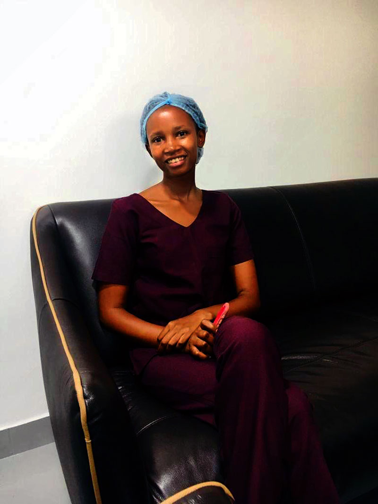

Potential Graduates: We can reform our academic system.
Potential Pupil to Unfit students
The most critical question is: During a serious self-evaluation, which period would you consider yourself to be the best product? Is it when you achieved a Division 1.3 in your form six examinations or when you obtained a GPA of 3.1 in university? If I am honest with myself, the truth is that upon completing advanced education, I possessed enough knowledge to teach secondary level subjects without constantly referring to books. However, after finishing university, the situation may be different.
Pupils in Tanzania undergo their education under the guidance of teachers, as well as guardians such as matrons and patrons in certain environments. Their educational journey typically spans from standard one to form six, which comprises the formal system in the country. This period is known as the Primary and Secondary level. During this stage, the Ministry of Education prepares the syllabus and conducts examinations.
National exams are administered at various stages throughout the academic years to assess the pupils’ progress. These exams serve as a means for identifying the most accomplished students within the national academic system. In the Primary and Secondary level, teachers are responsible for instructing the pupils based on the provided syllabus, while the National Examinations Council of Tanzania (NECTA) plays a role in testing the students and selecting the top achievers according to national academic standards.
In the primary and secondary stages, the roles of the trainer (teacher) and the examiner (Necta) are distinct. The primary responsibility of the teacher is to impart knowledge based on the syllabus, while Necta is responsible for evaluating the quality of the students’ performance. Thus, the qualification of a pupil is not determined solely by the teacher’s assessment.
This testing process not only assesses the pupil’s abilities but also evaluates the overall quality of school performance and the efforts of both teachers and students. The examination is typically based on the standards set by the public education system.
Public standard.
After completing the final national exam in form six, pupils transition into the university education system, where they become students. At this stage, students pursue various programs based on their specialization. The duration of these programs varies, with some lasting three years, others four years, and certain faculties requiring five years of study. The societal expectation for graduates is clear and straightforward: they should possess the skills and knowledge necessary to address challenges in society.
university standard.
In the university stage, the roles of the trainer and the examiner often merge, with the lecturer being responsible for both teaching and evaluating the students. This implies that the qualification of a student is determined by the standards set by the lecturer. Therefore, the competence and effectiveness of the lecturer play a crucial role in shaping the competence of the student. If the lecturer is highly competent, the students are more likely to acquire the necessary knowledge and skills.
However, it is important to note that this system also has the potential to produce graduates who may be considered incompetent or unfit to address not only public challenges but also their own personal challenges. If the lecturer is not adequately skilled or fails to effectively impart knowledge to the students, it can result in graduates who lack the necessary competencies. These graduates may struggle to apply their education in practical situations and may not meet the expectations of society.
The exact failure rates for postgraduate programs such as law school, CPA programs, and other related qualifications can vary depending on several factors, including the specific program, institution, and cohort of students. However, it is worth noting that these programs often have rigorous standards and expectations.
While it is difficult to provide specific statistics on student failure rates in these programs without more specific information, it is important to recognize that postgraduate programs often have high standards and demand significant dedication, effort, and mastery of the subject matter. Success in these programs typically requires a strong commitment to studying, preparation, and meeting the academic requirements set by the program.
Is university a brain washer or cultivator?.
According to Kishimba, an MP, he expressed his views on the current education system, stating that it is illogical to separate parents from their children for 20 years, only to provide them with a certificate at the end and expect them to find a job. He argued that this approach fails to equip individuals with practical skills necessary for everyday life, such as basic household tasks. Consequently, he questioned how these individuals can effectively manage in the real world.
In his further remarks, Kishimba claimed that the most productive individuals in today’s society are those who dropped out of school at Standard Seven, followed by those who left after completing Form Four or Form Six. He emphasized that these individuals possess practical skills that are valued within their community, including the ability to engage in farming. However, he labeled university graduates as “Viazi vilivyokataa kuiva,” a metaphorical expression implying that they are incapable of contributing meaningfully to the community.Kishimba suggests that universities should prioritize seeking job opportunities before admitting students.
His proposal entails a system where students are guaranteed employment upon completing their studies after paying their school fees.
It is important to note that these are the views expressed by Kishimba and may not reflect the opinions or beliefs of others or the broader perspective on education and the value of different educational levels.
While this idea may seem appealing on the surface, it presents some challenges and considerations. Here are a few points to ponder: Education is not solely about securing a job; it is also about acquiring knowledge, critical thinking skills, and personal growth. Universities play a vital role in equipping students with a broad range of skills that can be applied across various industries and careers. While the intent behind Kishimba’s suggestion may be to address the issue of employability, a more holistic approach to education and career development would involve a combination of academic knowledge, practical skills, experiential learning, and career support services.
Quicky approach.
It is suggested that a national standard for evaluating university students and lecturers should be established. This evaluation process, in the form of exams, would be created by a dedicated board or council responsible for testing all university students upon completing their courses. The purpose of this standardized examination is to ensure that both lecturers and students fulfill their responsibilities, knowing that there will be a national qualifying exam at the end. The exam would assess not only the material taught but also the content outlined in the respective course programs, thus ensuring that students meet the national academic standards.
By implementing such a system, the aim is to bring uniformity and accountability to the evaluation process across universities. It would provide a consistent benchmark against which students and lecturers can be assessed, reinforcing the importance of covering the necessary curriculum and meeting the expected learning outcomes outlined in the course programs.
It is important to note that the implementation of a national evaluation system should consider factors such as the diversity of university programs, different teaching methods, and the need for flexibility in adapting to emerging educational needs. Additionally, ensuring the fairness, transparency, and reliability of the evaluation process would be crucial in maintaining the credibility and effectiveness of the system.
Universal Medical Programs.
The current medical programs in universities can serve as a potential model for ongoing methods in other professional programs. These medical programs have a structured approach that can be referenced for reforming other university programs. In a medical doctor’s training, the students typically undergo a comprehensive curriculum that spans several years. The program typically consists of three years of theoretical classroom learning, followed by two years of clinical field experience, and culminates in a one-year internship.
During the initial three years, students acquire theoretical knowledge through classroom lectures and study materials. This period allows them to build a strong foundation of medical concepts and principles. The subsequent two years focus on clinical field experience, where students directly interact with patients under the supervision of clinical mentors. This hands-on experience provides them with practical exposure, enabling them to apply their knowledge in real-world medical scenarios.
Finally, students complete a one-year internship, during which they practice under a provisional license. This stage serves as a transitional period where students gain valuable experience in managing healthcare settings and working directly with patients, albeit with some supervision. Successful completion of the internship allows students to obtain a full practicing license, qualifying them for employment as medical professionals.
This structured progression of theoretical learning, clinical experience, and internship in medical programs ensures that students acquire both theoretical knowledge and practical skills necessary for their profession. It also provides a gradual transition from a supervised learning environment to independent practice. While other professional programs may have different requirements and specific needs, the medical program’s emphasis on a combination of theory, practical experience, and internship can serve as a reference for the reform of similar programs. Adapting and implementing elements of this model may help ensure that graduates are well-prepared for their chosen fields and possess the necessary skills and competencies to excel in their professional careers.
It is generally recognized that the health department’s workers exhibit a high level of competence, despite the challenges they face in their working environments. This professional class stands out as one of the few where individuals graduate from college with the ability to effectively perform their professional skills. It is also worth noting that competence in professional skills is not exclusive to the healthcare sector. There are various other professions where individuals graduate with the necessary abilities to perform their professional duties effectively. The level of competence may vary depending on the specific field, the quality of education and training, and individual commitment to professional growth.
Potential Method.
It is crucial for universities to prioritize the selection and training of competent lecturers to ensure the quality of education provided. Additionally, a well-designed curriculum, practical experiences, and opportunities for critical thinking can contribute to producing graduates who are better equipped to tackle various challenges in society. By separating the roles of the trainer and examiner, it establishes a system where the examiner can assess the students’ understanding and application of the material without bias. The emphasis is placed on the students’ ability to grasp the concepts and meet the requirements of the program rather than personal relationships or subjective factors.
My view point.
While I acknowledge the importance of universities, I believe that true progress can be achieved when there is complete accountability throughout the education system. This accountability should extend to both the lecturers who impart knowledge to the students and the examination bodies that assess their performance. Without such accountability, the quality of education will always be determined by individual standards rather than meeting the collective academic expectations.
Instead of solely blaming the university itself, it is essential to address the underlying factors that influence its functioning. Just as a windmill moves in the direction of the wind, we must tackle the root causes to bring about meaningful change. By adopting the rigorous standards applied in medical programs and applying them to all courses, we can ensure that graduates possess the necessary skills and abilities to tackle the challenges of the present and future.
In doing so, can strive for a system that emphasizes

both individual growth and community expectations, resulting in graduates who meet the highest standards of academic achievement while being well-equipped to address the pressing issues of our time.